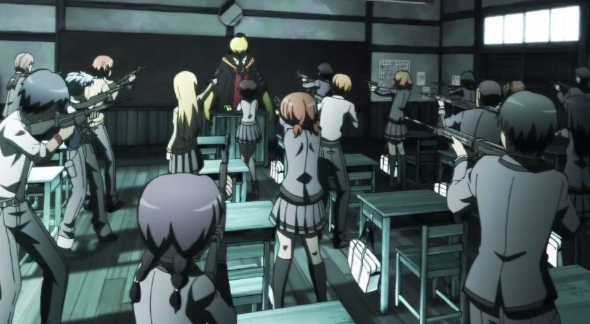
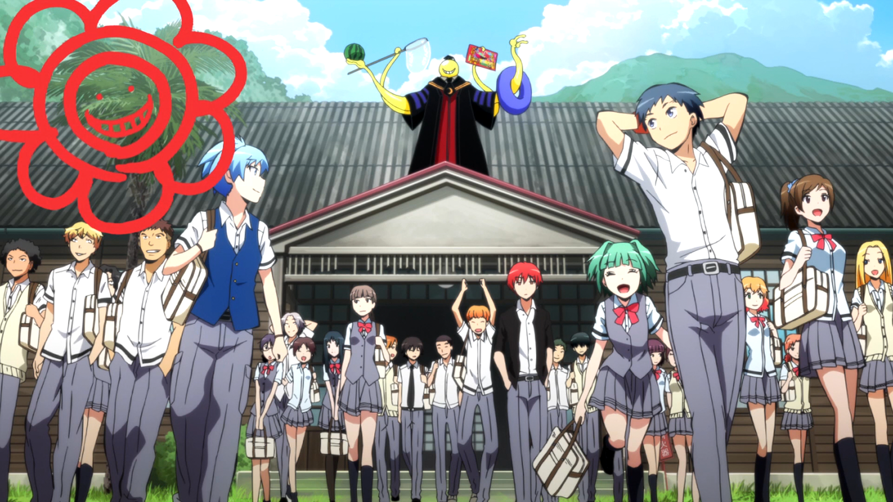

Back to home
A strange new teacher is introduced to Class 3E at Kunugigaoka Junior High School. The teacher is a round’headed, tentacle octopus’like creature with super abilities and whose color changes depending on his mood. Prior to introducing himself to his new class, he destroyed 70% of the moon. At the end of their school year &40;in March&41;, he plans to destroy the earth but decides to teach a junior high school class in the meantime for an unknown reason. The government accepts his request on the condition that he does not harm his students.
Affectionately, the students of Class 3E call him Korosensei. These same students greet him every day with assassination attempts in their journey to save the world by eventually murdering their own teacher, and to earn 10 billion yen from the government. Ironically, he teaches his students not only regular subjects, but the ways of assassination. Along the way, the students bonds with Korosensei due to the fact that he is such an excellent, caring teacher who helped them not only to improve their grades, but also their individual skills and perspectives for the future.
As the series goes on, the entire situation gets even more complicated as other assassins come after Korosensei, some for the reward, others for personal reasons, and the students eventually learn the secrets about him, the Moon’s destruction and his ties with their previous homeroom teacher, including the true reason why he must be killed before the end of the year term. The rumours, lies, and dark sides of Kunugigaoka Junior High School are also revealed hroughout the series.